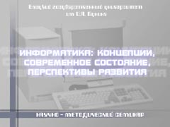
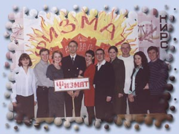
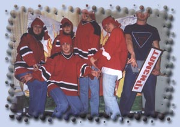
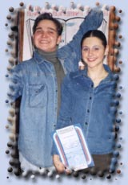

| число |
событие |
|
17.05.2003
|
Команда КВН физико-математического факультета заняла I место в первом областном фестивале студенческих команд КВН.
|
|
16.05.2003
|
Прозвенел последний звонок для выпускного курса.
|
|
14.05.2003
|
День здоровья.
|
|
07.05.2003
|
День физмата. Торжественная часть прошла в зале кинотеатра "Луч".
|
|
09.04.2003
|
Состоялась научно-практическая конференция преподавателей физико-математического факультета.
Секция математического анализа
Руководитель - доцент Щербатых В.Е.
Секция алгебры и геометрии
Руководитель - профессор Подаева Н.Г.
Секция методики преподавания математики
Руководитель - доцент Позняк Т.А.
Секция физики и методики её преподавания
Руководитель - доцент Кондаков О.В.
|
|
08.04.2003
|
Состоялась научно-практическая конференция студентов физико-математического факультета.
Секция математического анализа
Руководитель - доцент Щербатых В.Е.
Секция математического анализа
Руководитель - доцент Авраменко В.С.
Секция алгебры и геометрии
Руководитель - профессор Подаева Н.Г.
Секция методики преподавания математики
Руководитель - доцент Позняк Т.А.
Секция методики преподавания математики
Руководитель - доцент Симоновская Г.А.
Секция физики и методики её преподавания
Руководитель - доцент Кондаков О.В.
|
04.04.2003
03.04.2003
|

3-4 апреля 2003 года в Елецком государственном университете им. И.А. Бунина проводился научно-методический семинар "Информатика: концепции, современное состояние, перспективы развития". Организатором семинара явилась кафедра вычислительной математики и информатики.
Сообщение о проведении научно-методического семинара
|
| 03.04.2003 |
А ВЧЕРА-ТО НА ГАЛА-КОНЦЕРТЕ...
Мы уже сообщали, да, собственно, вы и так знаете, что по всем факультетам в эти дни прокатилась с песнями и танцами "Студенческая весна-2003", приуроченная к 50-летию Липецкой области. Членам жюри пришлось отсмотреть разноплановые по жанрам и содержанию самодеятельные концертные программы. Тематическая основа большинства номеров - наш старинный Елец, малая родина на карте области.

Результаты таковы: 1 место занял факультет ПиМНО, 2 - физмат, третье поделили филологи и юристы. Однако в гала-концерт вошли лучшие номера всех факультетов.
Вот как оценивает творчество студентов проректор ЕГУ по воспитательной работе Екатерина ЧЕРНЫХ:
- Достаточно сложно провести "отборку" лучших номеров хотя бы потому, что оказываешься как бы между молотом и наковальней. С одной стороны, выбираешь лучшего, а с другой - понимаешь, что до высокой оценки многим номерам еще далековато. Но все же, наблюдая за ребятами, заражаясь их энтузиазмом, стараешься помочь: где-то что-то подрепетировать, подправить.
Кстати, в этом году появилась новая тенденция в подготовке к "Весне". Например, туристы и спортсмены сделали ставку не на количество, а на качество концертных номеров. Так, программа первых состоит всего из четырех выступлений, но каких! Все они оказались настолько удачны, что вошли в гала-концерт, а у спортфака из трех в финал вышли два номера.
Что же, наверное, такая тактика более оправдана. В конце концов, не зря же в народе говорят: количество без качества - ненужное лихачество.
«Талисман» №7 (416) 4 апреля 2003 г.
СОСТОЯЛСЯ ТРАДИЦИОННЫЙ ГОРОДСКОЙ ФЕСТИВАЛЬ МОЛОДЕЖНОГО ТВОРЧЕСТВА «СТУДЕНЧЕСКАЯ ВЕСНА»
Лучшие номера, подготовленные студентами всех факультетов ЕГУ, были показаны в ходе гала-концерта, состоявшегося в ГДК.
Концерт, помимо высокого уровня мастерства танцоров, певцов, чтецов и других исполнителей, впечатляет еще и масштабностью. Начался он в духе старой традиции: академическим хором и балетом. А затем студенты показали, что им подвластны все жанры: чистый фольклор и фольк-рок, бальные танцы и брейк, академический и эстрадный вокал, а также немудренные, но смешные сценки в духе СТЕМа. Лучшие номера будут показаны в ходе заключительного концерта в Липецке.
«Красное знамя» №53-54 5 апреля 2003 г.
|
| НА ДНЯХ |
"ВЕСЕЛЫЕ" ФИЛОЛОГИ И "НАХОДЧИВЫЕ" ДОШФАКОВЦЫ, ОБЪЕДИНЯЙТЕСЬ!

Впрочем, и без нашего призыва команды-победители университетского чемпионата КВН пришли к этому решению. А началось все с того, что после серии игр определилась тройка лучших команд. Самыми "веселыми" и "находчивыми" оказались студенты дошфака, филфака и физмата. О последних, к слову, все без исключения отзываются как о "команде с большим с потенциалом", даже несмотря на некоторые расхождения во мнениях по части шуток.
Так вот, мало оказалось вырваться в лидеры. Задача-то впереди непростая! Надо предложить свой вариант сценария к грядущему 18 апреля ШОУ-КВН, на который съедутся кэвээнщики со стажем из разных городов! Дабы не ударить лицом в грязь, ребята придумали контрход. Уже объявлено об объединении команд двух факультетов: дошкольного и филологического. К сложившемуся альянсу присоединились талантливые музфаковцы. К сожалению, этой команде для победы не хватило малого: времени и яркой фигуры лидера. Но все еще будет! Звезды, если они загораются, на университетской сцене нужны обязательно!
«Талисман» №7 (416) 4 апреля 2003 г.
|
| 24.03.2003 |
Закончилась педагогическая практика студентов 4-го курса. |
20.03.2003
17.03.2003 |
Проводился межфакультетский фестиваль самодеятельного творчества "Студвесна - 2003" |
| 06.03.2003 |
"ИЩУ МУЖЧИНУ CО СТАЛЬНЫМ ХАРАКТЕРОМ…"
Эта фраза не из банальных газетных объявлений в рубрике "Брачные знакомства". Хотя, полагаю, многие читатели "купились", решив, что речь пойдет как раз о чем-то из этой серии. А вот и нет! Впрочем, зрители яркого конкурса "А ну-ка, девушки!" наверняка знают, кому принадлежит реплика. Однако не будем томить неизвестностью всех остальных, а, пожалуй, начнем рассказ...
Итак, на сцене актового зала - наши старые знакомые: бессменные ведущие студенческих концертов и прочих "высоких собраний" - студентка ПиМНО Маргарита Дядищева и будущий историк Максим Антоненко. А вот и наши конкурсантки, характер которых (если верить комментариям/лишний раз доказывает верность стародавней истины: нрав девушки также непредсказуем, как и весенняя природа. Сегодня она кроткая Золушка, а завтра - бескомпромиссная Снежная Королева. Каждая из десяти участниц оригинальна и неповторима по-своему. Однокурсники-то в этом уверены на все сто, а вы, чтоб не сомневались, познакомьтесь поближе!
О КОМ МЕЧТАЕТ КРАСАВИЦА?
Второкурсница истфака Людмила КАРТАШОВА - ни больше, ни меньше "милый идеал, хрупкое созданье" - находится в поисках спутника жизни "с математическим складом ума, чувством юмора, большой силой воли" и - греческим профилем. Вылитый Аполлон! Предпочтения Екатерины ПАНКОВОЙ (музыкально-педагогический факультету- "девушки с трудным характером" - веселые компании и мужчины с личным авто. Идеальный спутник жизни для нее, цитируем, "владелец трактора и .стального характера". Евгения КУЗНЕЦОВА (дошфак) - очаровательная
обладательница квартиры, машины и хорошей работы - мечтает встретить ВЕРНОГО спутника жизни.
А вот студентка начфака Лариса ИСТОМИНА - противница принципа "только молчание украшает девушку", - и Екатерина БУЛАНОВА (представительница инженерно-физического факультета, Стрелец по гороскопу) - заранее предупреждают любителей покоя и тишины: мы, дескать, не про вашу честь. Катя любит спорт, в свободное время занимается ремонтом бытовой техники. Неужели универсальный человек: сам ломаю - сам чиню? Еще одна жизнерадостная, неунывающая спортсменка, в вечном поиске чего-то - Ольга КОНОВАЛОВА (физмат). Она мечтает о большой любви, о "преданном, целеустремленном бой-френде с горячим сердцем".
"Скромная обладательница массы лучших качеств" да к тому же будущий филолог, Екатерина ХОРОШИЛОВА мечтает встретить веселого и надежного спутника жизни. А вот будущему, юристу, общительной и симпатичной Татьяне ГОЛОСНОЙ, пока еще не встретился, видимо, "молодой человек без вредных привычек для веселого времяпрепровождения". Именно с ним, высоким и симпатичным, она хочет познакомиться. Несмотря на то, что Ольга КУР-НОСОВА изучает весьма серьезную экономическую науку, она не мыслит своей жизни без танцев и веселья. Так вот, если ТЫ загадочный, романтичный и обворожительный парень - загляни на этот факультет. И, наконец, целый перечень достоинств должен быть у избранника конкурсантки со спортфака Жанны ГУБАНОВОЙ, соответствующих ее высоким требованиям. Помимо классических цветов и турне в подарок, он должен еще и "со спортом дружен быть, и здоровьем дорожить". Ну, кто бы сомневался?!
ВЫ САМО СОВЕРШЕНСТВО - ОТ УЛЫБКИ ДО ЖЕСТА!
А чтобы доказать право на собственное совершенство, нашим участницам предстояло пройти ряд испытаний, которые, заметим/были выдержаны с достоинством. Во-первых, девушки бойко отвечали на всякие каверзные вопросы. Например, "что за человек, который достигает такого уровня развития, который позволяет считать его носителем сознания и самосознания, способный на самостоятельную преобразующую деятельность?" Задумались? То-то же! А наши красавицы как орешки щелкают подобные премудрости педагогики. (Кстати, правильный ответ: личность). И вы еще после этого верите старику Конфуцию, который якобы утверждал, что ум обыкновенной женщины приравнивается к уму курицы, а необыкновенной - к уму двух куриц. Да просто китайский мудрец не знал студенток ЕГУ!
Придет время, и наши участницы отложат в сторону книжки. Да что там книжки?! О себе забудут напрочь, как только в колясках запищат розовощекие Павлушки и Наташки. Вот ведущие и придумали конкурс, чтобы девушки потренировались, набили руку, так сказать, с пеленками да распашонками. И это испытание девчонки выдержали!
Ну а как дело дошло до демонстрации мод, так зал и замер. Где уж тут самую-самую выбирать - каждая достойна звания Первой красавицы! На том жюри и порешило. Каждая участница конкурса была отмечена почетной грамотой в определенной номинации. И все же трех финалисток пришлось-таки объявить. Порядок. Места на "пьедестале почета" распределились следующим образом. Первое место и путевку на Черноморское побережье получила Екатерина ПАНКОВА, музыкально-педагогический факультет. На втором месте - будущий экономист Ольга КУРНОСОВА. На третьем - Лариса ИСТОМИНА (ПиМНО). Ольге и Ларисе были также вручены путевки в санатории. Заметим, что отдых победительницам организовал студенческий профком. Что и говорить, истинные джентльмены всегда знают, что нужно настоящим красавицам.
Милада ФЕДЮКИНА
«Талисман» №6 (415) 21 марта 2003 г.
|
| 02.03.2003 |
Прошёл «День открытых дверей». |
| 20.02.2003 |
САМЫЕ ДОБРЫЕ, ЩЕДРЫЕ И РОМАНТИЧНЫЕ …
В преддверии праздника защитника Отечества в нашем вузе прошел конкурс, героями которого стали самые мужественные и ловкие, добрые и романтичные, щедрые и целеустремленные, одним словом, настоящие мужчины, а значит, истинные студенты ЕГУ! Именно так сказали об участниках праздничного шоу его ведущие Маргарита Дядищева (5 курс, ПиМНО) и Максим Антоненко (5 курс, истфак). Кстати, этот дуэт задал особый тон всему вечеру. Ну а все остальное уже зависело от конкурсантов.
ПОСМОТРИМ, КТО ПРИШЕЛ...
Итак, кто они, конкурсанты? Послушаем, что говорили сами участники. За титул главного «а ну-ка, парня» на сцене боролись «добрый, нерешительный брюнет с карими глазами, жизнь которого полна безрассудных поступков» пятикурсник филфака Денис Бойков, «поклонник Конан Доиля и панк-рока, отличающийся эрудированностью и оригинальностью во всем» Роман Кислых (ПиМНО, 4 курс).
Их соперниками стали пятикурсник музфака Владимир Дубровский, «дарящий многочисленным поклонницам свою доброту и нежность», Алексей Кубраков, студент дошфака, «готовый ради единственной на все». Опыт общения с женским полом — три года
учебы на факультете среди 25 студенток. Еще один претендент — Александр Курносов (инженерно-физический факультет, 3 курс), «большой оригинал, отличающийся излишней эмоциональностью и добросердечностью». Увлекаясь философией, познает мудрость жизни. А своей любимой девушке готов подарить свою нежность и весь мир в придачу. Самым «безрассудным» поступком в своей жизни считает участие в конкурсе «А ну-ка, парни!»
Еще один герой, «имея немного лени, чувство долга и 41 размер обуви», с этого года благополучно постигает азы физико-математических наук — Антон Трубицын. И, наконец, восьмерку смелых завершают первокурсник спортфака Игорь Моргачев, «немного эгоистичный брюнет, мечтающий встретить девушку, готовую отправиться с ним в походы по зимним лесам и полям», а также будущий экономист, пока же студент 2 курса Сергей Миронов, «на редкость галантный, хотя и немного вспыльчивый романтик».
ИНОГДА СПОТЫКАЛИСЬ, НО БОРОЛИСЬ И НЕ СДАВАЛИСЬ...
Как вы уже догадались, речь сейчас пойдет о тех конкурсных заданиях, с которыми ребятам предстояло не просто справиться, но так, чтобы покорить сердца прекрасной половины зрительного зала. А заодно своим интеллектом, красотой и ловкостью (куда в наше время без нее?) сразить наповал строгое жюри. Признаюсь откровенно, что лично я впервые в жизни кого-то «жюрила». Вместе со мной оценивали претендентов представители отдела по делам молодежи Наталья Жукалина, Михаил Ковыршин, а также корреспондент городской газеты Роман Демин.
Небольшое отступление. Если верить анкетированию, проведенному среди девушек вуза накануне вечера, то можно узнать, например, что будущие учительницы начальных классов ценят в мужчинах целеустремленность, мужественность и чувство юмора. Девушки-филологи предпочитают интеллектуальных, добрых юмористов, а будущие воспитательницы видят свой идеал в независимых мужественных интеллектуалах...
Так кто же они, наши конкурсанты: свободолюбивые мачо или сентиментальные романтики? Скажем коротко:
все они разные. А пока — о первом испытании, которое призвано было выявить интеллектуальные возможности. Конечно, коэффициент IQ никто и не помышлял вычислять, а все же на этом рубеже «рыцари» начали спотыкаться. Рановато, конечно, да и вопросы-то на самом деле не из высшей математики были, честное слово! Скорее, на знание «отцов» педагогики. И все же порой получалось, как в том анекдоте: «Да кто ж не знает старика Крупского!»
Зато, что касается мира увлечений наших героев, тут, как говорится, без комментариев. Не зря же ведущий подметил, что «каждый конкурсант, представляющий свой факультет, — это яркая, неповторимая личность». Не было особых проблем у парней и в скоростной примерке костюма химической защиты Л-1. Самым быстрым оказался будущий экономист Миронов: 31,5 секунды понадобились ему, чтобы надеть на себя этот весьма неудобный «наряд». Зато над сборкой мясорубки (был и такой конкурс) пришлось попотеть. Одни предпочли медленно, но безошибочно собрать кухонный «агрегат», другие же, проигнорировав некоторые весьма существенные «мелочи», пошли на рекорд по времени.
С чувством прекрасного у участников тоже были сложности. Чтобы определить название картины и ее автора, троим пришлось прибегнуть к помощи кураторов. Но состязания в танцах и декламации шекспировских сонетов смогли сгладить иные огрехи.
«И СВЕТ РЕШИЛ, ЧТО ОН УМЕН И ОЧЕНЬ МИЛ»

Итак, итоги восьми конкурсов таковы. Первое место по сумме баллов занял Антон Трубицын. Однако, по большому счету, в состязании не было победителей и побежденных. Каждый участник был отмечен специальным призом, поскольку каждый все-таки доказал, что он, несмотря на отдельные промахи, настоящий мужчина.
О двух призах все же скажу особо. Приз зрительских симпатий и путевку в местный профилакторий (подарок студенческого профкома) достался Алексею Кубракову. А вот Владимиру Дубровскому — тоже путевка, и тоже от профкома, но уже в областной санаторий.
И НАПОСЛЕДОК...
Я намеренно не описывала в деталях все происходившее в тот вечер. Поскольку все равно не удалось бы передать ни настроение публики, ни накал борьбы. Лучше, как говорится, один раз увидеть самому и искренне поболеть за своих... Впрочем, актовый зал был переполнен. Так что, если вас среди зрителей не оказалось, жаль — вы многое потеряли.
А что касается наград... Да для нас, женщин, не так уж и важно, какие «титулы» теперь у наших героев: «Мистер сила» или «Мистер интеллект». Ведь сегодня, накануне замечательного праздника весны, каждый из титулованных и нетитулованных с одинаковой искренностью торопится сказать самые дорогие слова самым любимым женщинам...
Милада ФЕДЮКИНА
«Талисман» №5 (414) 7 марта 2003 г.
P.S. Не кажется ли Вам странным распределение призов? Когда победитель или просто "участник набравший максимальное количество баллов" получает обычный "толковый словарь". По-моему, это очень даже странно!
Мнение Web-masterа
|
· 1 · 2 ·
|
|